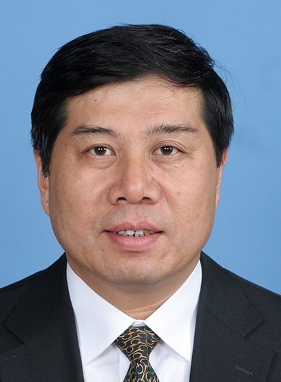

王旭东
院长
王旭东
院长
王旭东，男，汉族，1967年2月出生，甘肃山丹人，2003年4月加入中国共产党，1990年8月参加工作。2002年毕业于兰州大学资源与环境学院地质工程专业，研究生学历，工学博士，研究馆员。
1991年6月到敦煌研究院工作，历任敦煌研究院保护研究所副所长，敦煌研究院院长助理，保护研究所所长。2005年1月任敦煌研究院副院长。2011年5月任敦煌研究院常务副院长、党委副书记。2013年11月任敦煌研究院党委书记、常务副院长。2014年12月任敦煌研究院院长、党委书记。2019年4月至今任文化和旅游部党组成员、故宫博物院院长（副部长级）。
主要从事石窟、古代壁画和土遗址保护，文化遗产监测预警与预防性保护等方面的研究。1991年开始文物保护工作以来，主持完成全国重点文物保护单位保护维修工程60余项，承担国家及省部级课题近20项，主持或作为主要参与人完成与美国、日本、英国、澳大利亚等国相关文化遗产保护和管理机构开展的国际合作项目10余项，发表学术论文170余篇，第一作者出版《土遗址保护关键技术研究》《古代壁画规范研究》等专著6部，获国家或省部级科技奖励10多项，何梁何利奖科学与技术创新奖获得者，授权技术发明专利20余件，主持完成国家及行业技术标准5项，被授予“全国优秀科技工作者”“宣传文化系统拔尖创新人才”“甘肃省五一劳动奖章”“文化部优秀专家”“甘肃省优秀专家”“甘肃省先进工作者”等多项荣誉称号，入选国家百千万人才工程和甘肃省领军人才工程。中共第十九届中央委员会候补委员。
 都海江
党委书记、副院长
都海江
党委书记、副院长
都海江，男，汉族，1965年6月1日出生，籍贯安徽宿松，1993年12月加入中国共产党，1989年7月毕业于石家庄铁道学院隧道与地下工程专业，大学本科学历，工学学士，1989年7月参加工作，高级工程师。
1989年7月至2003年7月先后任铁道部第十六局技术员、助理工程师、工程师、高级工程师、副科长、副指挥长，中铁十六局集团第六工程有限公司总经理、副董事长、副书记等职；2003年7月至2008年12月任文化部计划财务司副司长；2008年12月至2009年2月任文化部财务司副司长；2009年2月至2012年10月任中国国家博物馆副馆长；2012年10月至2018年3月任文化部办公厅副主任、机关服务中心主任；2018年8月至2019年3月任文化和旅游部机关服务中心主任、党委副书记，北京兴旅国际传媒有限公司董事长、北京兴旅国际会展有限公司董事长；2019年3月至今任故宫博物院党委书记、副院长。
曾发表论文数十篇、参加项目获得国家科技进步二等奖，多次获得省部级科研奖励。
 李小城
常务副院长
李小城
常务副院长
李小城，男，汉族，1960年7月出生，籍贯湖北省监利县，中共党员，大学本科毕业。1978年2月应征入伍，在空军地空导弹某部先后任排长、副连职干事、政治指导员、副营职干事、政治教导员（正营职）、科长（副团职）、副处长（正团职）、副主任（正团职）等职。2005年10月转业后到故宫博物院工作，2006年1月任党委办公室副主任（正处级），2007年7月任纪检监察办公室主任，2010年7月任党委办公室、纪检监察办公室主任，2012年2月任保卫处处长。2015年12月任故宫博物院副院长。2019年1月任常务副院长（正局级）。分管保卫处、开放管理处、消防处、安全技术处、行政处。
娄 玮
副院长
娄玮，男，1970年10月出生，北京市人，中共党员，大学本科学历，历史学学士学位，2000至2002年在北京大学艺术学系进修研究生课程，研究馆员。1993年8月参加工作，1993年8月至2001年4月在故宫博物院保管部、古书画部工作，2001年4月至2004年2月任院办公室业务协调科科长，2004年2月至2008年2月任文物管理处副处长，2008年3月任文物管理处处长，2012年10月任故宫博物院院长助理（正处级），2014年1月被文化部任命为故宫博物院副院长。分管财务处、预算处、外事处、文物管理处、事业发展部、文创事业部。
曾先后被评为2002年“文化部青年岗位能手”、2004年“文化部优秀青年”，文化部青年联合会第二届委员。
参加工作以来，一直从事博物馆藏品管理及中国古代书画的鉴定研究工作。管理工作方面，先后参与了《故宫博物院2003—2020年发展总体规划纲要》、《故宫博物院2004—2010年文物管理工作规划》、《故宫博物院藏品管理规定》等重要工作规划和规章制度的起草、修订；参与组织实施了2004—2010年的藏品清理验收工作和对西周晚期青铜重器“克钟”、《隋人书出师颂》、《明朱元璋、朱厚熜书法合卷》等重要文物的征集；严格日常藏品管理并积极推动与国内文博机构的合作。研究工作方面，逐步形成了自己的研究方向和思路。主要以明代吴门和太湖流域及周边地区的画家、流派及其作品为重点，以传世和见于著录的书画作品中存在的问题为出发点开展研究，侧重解决具体问题。陆续在《文物》、《故宫博物院院刊》、《中国历史文物》等学术期刊发表鉴定、研究论文多篇，并出版专著1部；独立完成了院级科研课题——《姚绶的生平和艺术》；主持了《乾隆时代的宫廷绘画》等大型展览；参与了《故宫博物院藏文物珍品全集》中绘画部分多卷本的编写工作。
 任万平
副院长
任万平
副院长
任万平，女，汉族，1964年12月出生，黑龙江省伊春市人，中共党员，研究馆员。1990年6月毕业于吉林大学历史专业，获硕士学位，1990年8月来故宫博物院参加工作。2002年8月任宫廷部原状陈列组组长，2007年7月任宫廷部副主任，2010年7月任古器物部副主任（主持工作），2012年3月任器物部（古器物部）主任；兼任故宫博物院学术委员会委员、故宫研究院明清档案与宫廷历史研究所副所长、明清宫廷技艺研究所副所长、中国史学会清代宫史研究会秘书长、国家清史纂修工程项目专家。2015年12月任故宫博物院副院长。分管书画部、器物部、宫廷部、图书馆。
主要从事清代政治制度与礼俗研究，尤其对具有集大成特点的清代宫廷礼制与习俗有比较深入的思考，采用文献、档案、文物三重证据法，不断探讨其渊源与流变。近年特别重视历史图像学研究，通过历史图像印证、解析、补充清代文献、档案之著录，在境内外多家博物馆与多所大学讲学，立体而形象地阐释宫廷礼制与习俗中蕴含的传统文化意义，以及我们今天应该如何传承与弘扬。
策划、主持在故宫博物院内举办的“龙凤呈祥——清代皇帝大婚庆典展”、“天子万年——清代皇帝万寿庆典展”、“坤宁宫皇帝大婚洞房原状复原展”、“普天同庆——清代万寿盛典展”等多项展览，以及国内各地、赴境外多地多项专题性与综合性展览等。合著、参编著作多部，主编著作3部，发表论文数十篇。
 朱鸿文
纪委书记
朱鸿文
纪委书记
女，汉族，1971年10月出生，陕西省富平县人，中共党员，研究馆员。1998年毕业于北京大学历史学系，研究生学历，硕士学位。1997年7月起参加工作，1998年7月到故宫博物院办公室参加工作，2004年3月至2006年1月任秘书科科长，2006年1月任院办公室副主任兼秘书科科长，2012年11月任院办公室主任，2017年12月由文化部党组任命为故宫博物院纪委书记，兼任北京故宫文物保护基金会监事。分管纪检监察办公室、院办公室、法律处、审计室。
主编有《故宫博物院九十年》《故宫博物院早期院史（1925-1949）》，策划编辑《故宫博物院档案汇编·工作报告1925-1949》《故宫服务——故宫旅游公共服务模式研究》等。自2004年《故宫博物院年鉴》创刊，一直担任副主编、主编。执笔《故宫博物院2011-2015年工作计划》《故宫博物院中长期发展调研报告》，组织起草《“平安故宫”工程项目实施纲要》《“平安故宫”工程项目方案》。策划统筹纪录片《我在故宫修文物》、文博探索节目《国家宝藏》、大型文化季播节目《上新了
故宫》等文化创意节目及其在故宫的摄制并宣传推广。

闫宏斌
副院长
闫宏斌，男， 1962年2月出生，汉族，籍贯山西文水，中共党员，研究生毕业，馆员。1980年11月参加工作，1980年11月至
1983年12月在部队某部服役，1983年12月至1992年2月先后在故宫博物院人事处和团委工作，1987年7月任团委干事（副科级），1988年4月任团委书记（副处级），1992年2月起任故宫博物院群众工作部副主任，1998年4月至2005年2月任故宫博物院展览宣教部主任，2005年2月至2018年11月任故宫博物院宣传教育部（故宫国际博物馆协会培训中心办公室）主任，2018年11月至今任故宫博物院副院长。
多年以来一直从事博物馆宣传教育工作，现分管宣传教育、展览、出版等，主要研究方向为博物馆宣传教育，发表学术论文数篇。
 赵国英
副院长
赵国英
副院长
赵国英，女，1963年生，汉族，祖籍山西浑源，群众，编审。1980年9月至1987年6月，南开大学历史系文物博物馆学专业学习，获历史学学士、硕士学位。2000年9月至2003年7月，中央美术学院美术史专业学习，获文学博士学位。
1987年7月参加工作，1987年7月至2004年1月在人民美术出版社古典美术编辑室工作，2004年2月起先后在故宫出版社（紫禁城出版社）、出版部（故宫书画教育中心）工作，2006年1月任紫禁城出版社副总编辑（副处级），期间兼任该社书画编辑室主任，2010年7月任紫禁城出版社总编辑（正处级），2013年5月任出版部（故宫书画教育中心）主任兼故宫出版社总编辑（正处级），2017年2月任研究室主任，故宫博物院学术委员会委员、《故宫博物院院刊》主编、中国紫禁城学会副会长。2018年11月至今任故宫博物院副院长。现分管科研处、文保科技部、故宫学研究所、研究室、考古部。
策划编辑《米芾书法全集》《石渠宝笈》（精选配图版）《故宫画谱》《故宫珍藏历代名家墨迹》《中国历代法书精品大观》(百册)等大型图书，主持《徐邦达集》《故宫博物院藏品大系》《故宫经典》等系列图书的编辑出版工作。
担任责任编辑的图书，曾获全国第一届优秀美术图书特别金奖、首届全国优秀艺术图书奖，第四届、第五届中华优秀出版物奖，第四届中国政府出版奖。
发表“清初私家书画鉴藏研究”、“从王鉴绘画研究看明末清初绘画与鉴藏的关系”等学术论文，出版个人专著《王鉴绘画研究》。